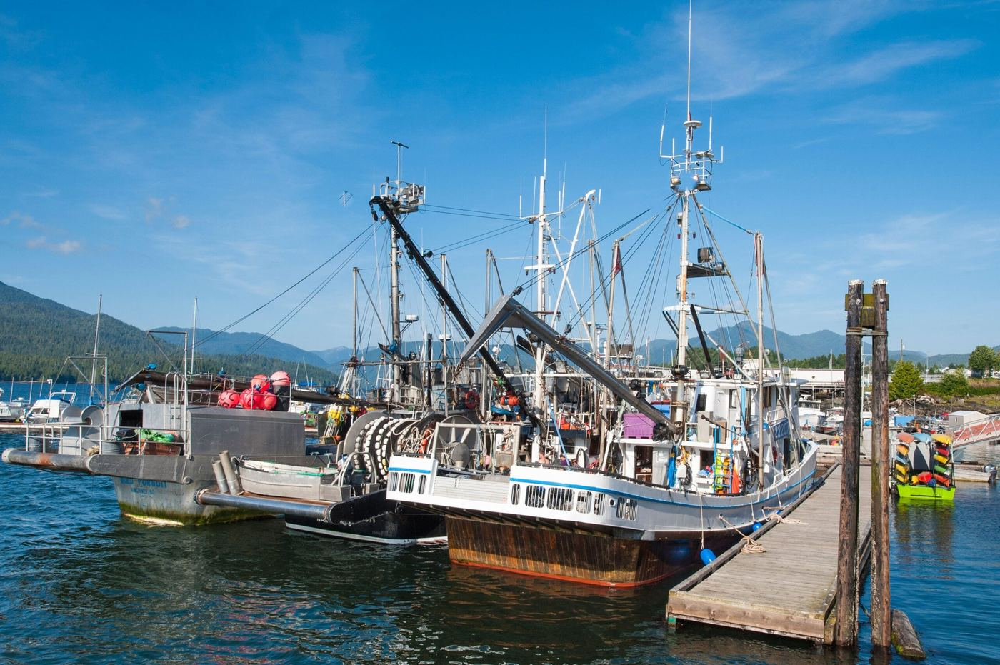
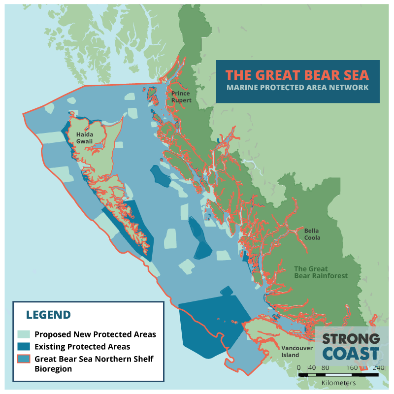
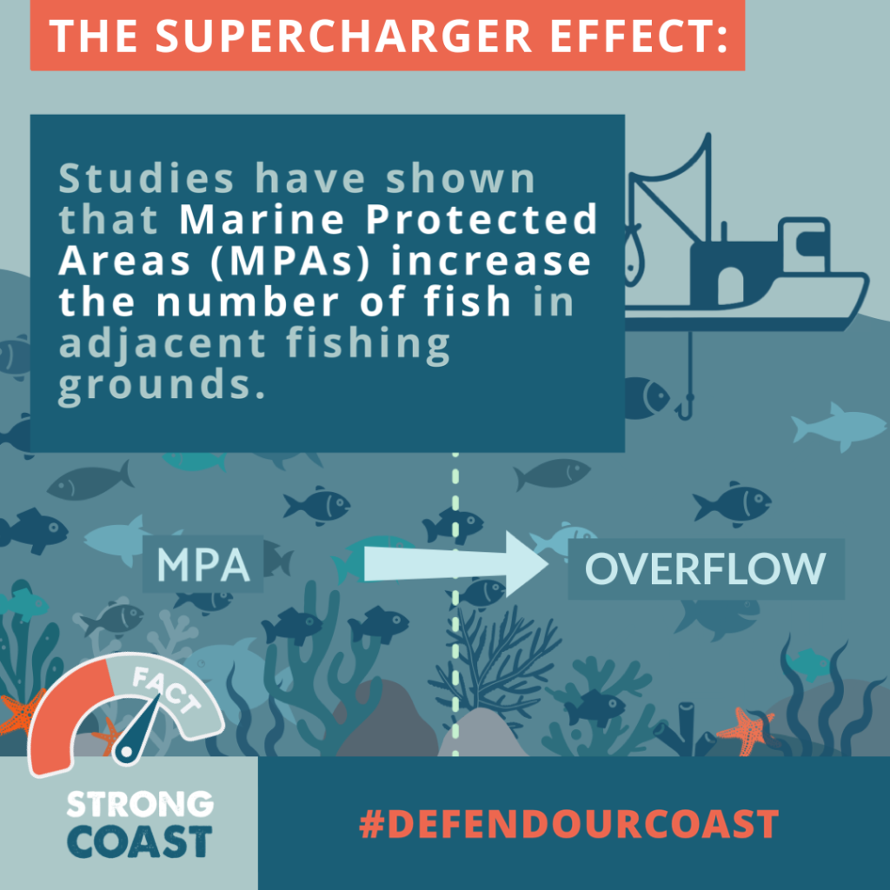
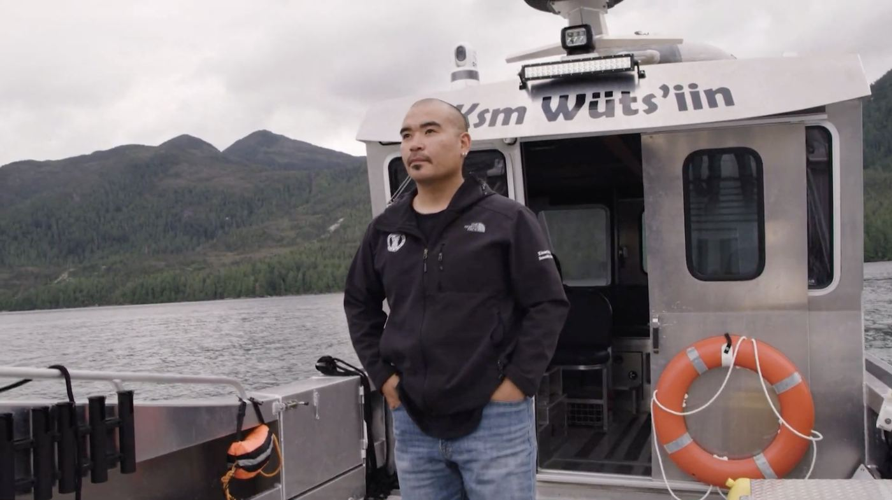

The plan
A working coast,
protected
The Great Bear Sea Marine Protected Area Network is not a park gate. It's the coast's business plan: protect the waters that produce the fish, keep the rest open, and put the people who live here in charge of the watch.
What it is
30% protected. 70% open.
The Network covers roughly 30,500 km² — about 30 percent of the Great Bear Sea, from northern Vancouver Island to the Alaska border. Most of that is existing protection (marine parks, conservancies, Rockfish Conservation Areas) stitched together; the rest is new sites chosen because they're the breadbaskets: spawning bays, nurseries, feeding grounds, and the coast's one seamount.
A network beats scattered sites for the same reason a chain of savings accounts beats loose change: connected protections cover a species' whole lifecycle — where it spawns, where the juveniles grow, where the adults feed.
Different zones carry different rules, worked out site by site. What's consistent: bottom trawling, oil and gas, mining and dumping are off the table in new MPAs under Canada's 2019 protection standards, and Indigenous food, social and ceremonial harvest continues throughout.


Why it pays
Spillover: the supercharger effect
Inside a well-managed protected area, fish live longer and grow bigger — and big fish are exponential breeders. The surplus doesn't stay put. It spills across the boundary into the fishing grounds next door.
That's why the smart money on this coast — community fisheries, tourism operators, anglers — reads the Network as an investment, not a fence.
Who runs it
Made on this coast. Watched from this coast.
The Network Action Plan was endorsed in February 2023 by 15 First Nations, the Province of BC, and the Government of Canada — the product of more than a decade of planning with commercial harvesters, communities, and scientists at the table. This is the opposite of a distant edict: it's local knowledge with a signature line.
On the water, enforcement runs through people who know every reef by name. Coastal Guardian Watchmen from Nations across the coast monitor, steward, and report — and in 2023, Kitasoo/Xai'xais and Nuxalk Guardians became the first in Canada granted provincial Park Ranger authority. Competence, presence, and jurisdiction: that's what protection looks like when it's real.

Straight answers
The tough questions, taken head-on
Skepticism is healthy on a coast that's been burned before. Here's where we stand, sources included.
Won't this kill fishing jobs?
The Network protects about 30 percent of the region; the large majority of the Great Bear Sea stays open to fishing. The sites inside the line were chosen because they're the waters that produce the fish — and the measured effect of protecting such places is more catch next door, not less (up to 245% higher adjacent catch rates). The real jobs threat on this coast has been stock collapse and quota consolidation — not conservation.
Isn't DFO's management already the most conservation-minded in the world?
Ask the herring fleet, or anyone who remembers the salmon runs. Decades of single-species "maximum sustainable yield" management — with catch limits set from overestimated stock sizes — walked several of our most important fisheries downhill. An MPA network is the insurance policy management alone hasn't been: whole habitats protected outright, so the system can rebuild no matter whose spreadsheet was wrong.
Is this a partisan project from Ottawa?
It was planned on this coast for over a decade and endorsed by 15 First Nations together with both the provincial and federal governments — across changes in ministers and mandates. And the public support is cross-partisan: 78% of Conservative, 87% of Liberal, 88% of NDP and 88% of Green voters in BC back MPAs. Fish don't check voting cards, and neither does this plan.
Do marine protected areas actually work?
It's one of the best-measured tools in ocean management. A global analysis of 87 MPAs found ~670% more fish biomass inside well-managed sites; California's network shows significant population gains; even highly migratory tuna increased in grounds next to a large MPA. The pattern is boring in the best way: protect habitat, get more fish.
What about recreational fishing?
Zoning is site-by-site, and most of the region stays open — the planning detail lives at mpanetwork.ca. What anglers get out of the deal is the thing licences can't buy: rebuilt stocks. Spillover doesn't distinguish between a commercial troller and a tin boat with a downrigger.
Who enforces it — and who pays?
Enforcement combines DFO with Indigenous Guardian programs that already patrol this coast — including Guardians holding Park Ranger authority. Long-term funding uses the Project Finance for Permanence model pioneered in the Great Bear Rainforest, with committed federal, provincial and philanthropic dollars — so protection doesn't live or die on one budget cycle (BC Gov).
Tell Ottawa: implement the Network
Sites are moving through designation now. A two-minute message to the Prime Minister, DFO, and your MP keeps the schedule honest.